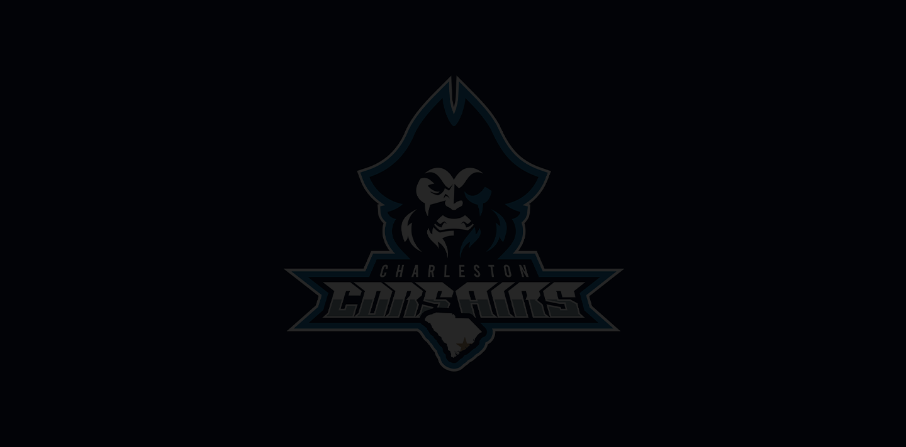
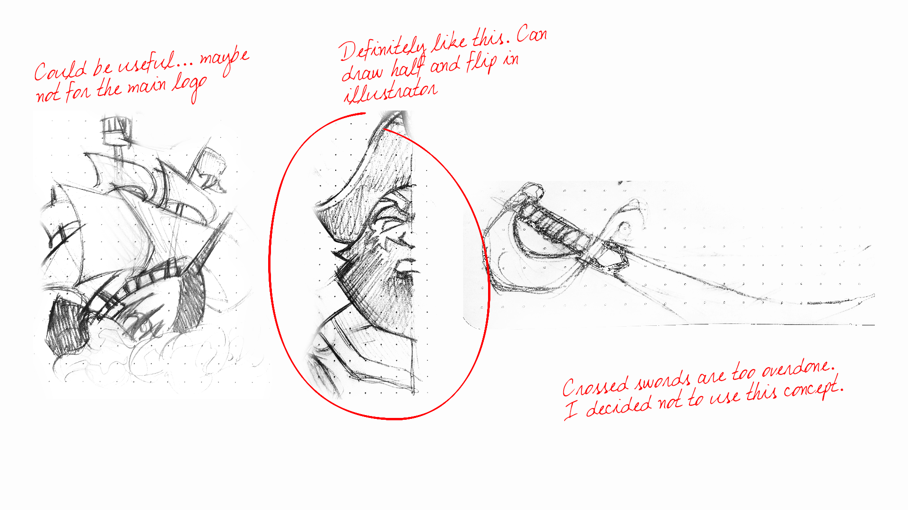
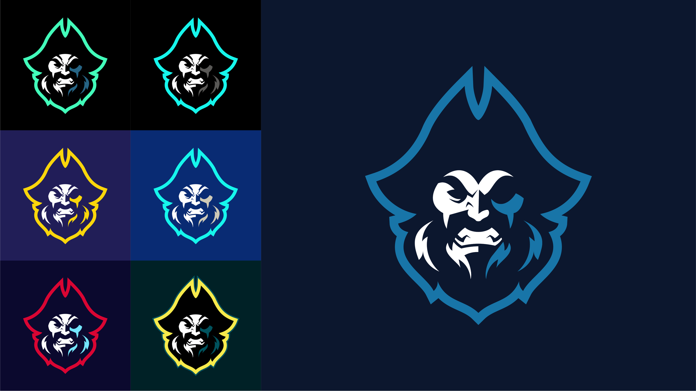
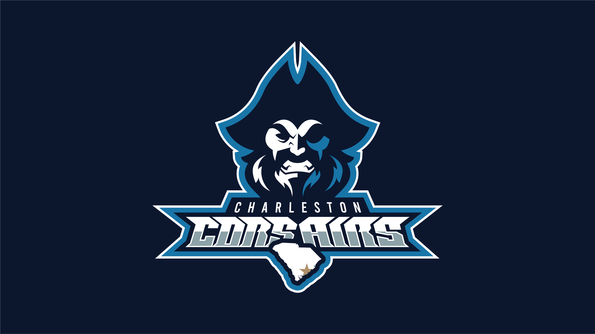
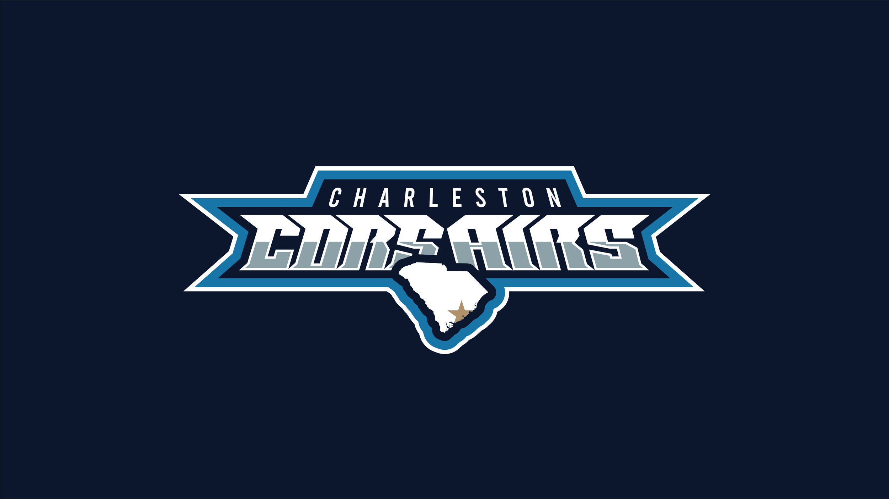
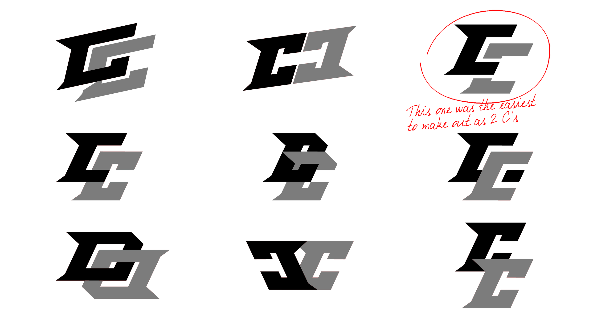
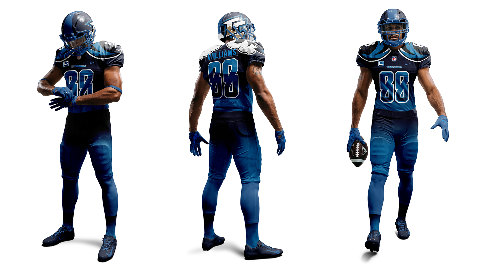

The Charleston Corsairs needed a brand that felt as bold and relentless as the team itself. I developed a complete visual identity that established the club’s personality across logos, uniforms, merchandise, and supporting brand assets.
The Question
Most sports identities stop at a logo. I wanted to explore what it takes to build a complete franchise brand — one that could scale seamlessly across uniforms, merchandise, environmental graphics, and digital experiences.
The Answer
Every decision began with understanding who the Corsairs were, what they stood for, and the community they represented. The identity was built from those foundations, creating a brand that feels authentic rather than manufactured.
The Beginnings

I wanted to tap into South Carolina’s deep pirate history since it gives the team a bold identity that feels rooted in the state.
Finding the Palette

I explored a range of options before narrowing in on tones that tied back to the South Carolina flag and the coastal environment. Pulling from the ocean and state symbolism gave the logo a clearer sense of place.
The Final Design


The Team Mark

The goal was to create a symbol that worked on its own, stayed readable at any size, and still carried the attitude of the team.
Brand Guide
It covers the core logo, color palette, typography, usage rules, and supporting elements so the team’s look stays consistent anywhere it appears. Every detail is documented, from how the mark should be displayed to which fonts belong in which situations. It’s a complete reference that keeps the brand clear, recognizable, and easy to use across any platform.

Team Apparel
With the identity system finalized, the next step was applying it to what players actually wear — jerseys, warmups, and gear built to carry the brand with pride on game day.

Marketing Collateral
Finally, I wanted to create some posters using the images I created for the player’s uniforms. These were meant to simulate what social media or advertisements would look like.